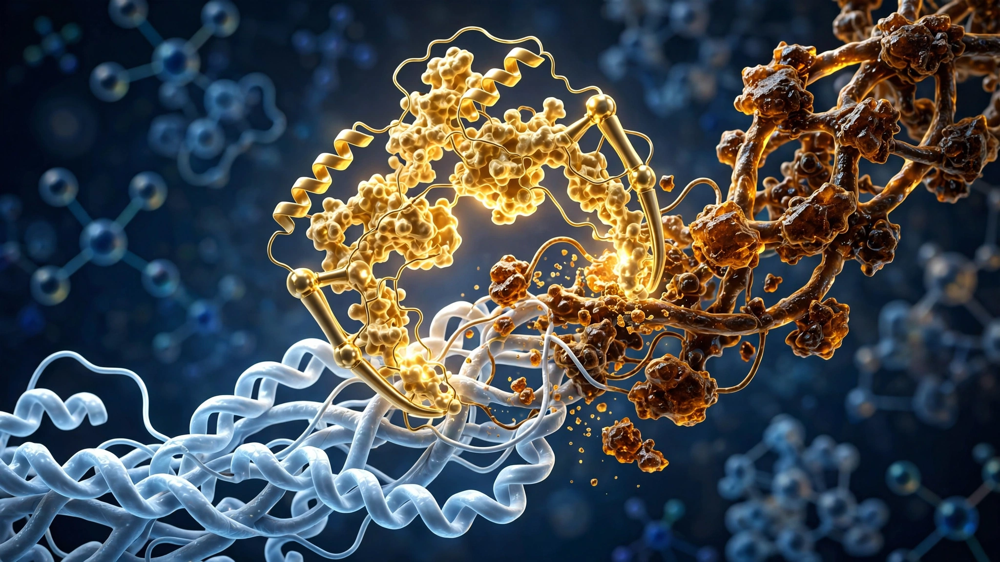

Every Drug That Tried to Reverse Protein Aging Failed. An Enzyme Just Did It on Human Tissue.
CMLase reversed more than 70% of accumulated molecular damage in a 75-year-old's arteries, bringing glycation levels below those of a 31-year-old's skin. We mapped two decades of AGE-drug failures to show why enzymatic repair succeeds where small-molecule chemistry could not.

Seventy percent. That is how much accumulated molecular damage an engineered enzyme stripped from a 75-year-old's arterial tissue in a single overnight incubation. In skin, the reduction exceeded 55%, dropping glycation levels below those measured in a 31-year-old donor. A paper published today in Nature Communications by researchers at Revel Pharmaceuticals, Calico Life Sciences, and the University of Colorado describes the first enzyme capable of reversing advanced glycation end products on intact human tissue, a category of protein damage that the field has treated as permanent for over three decades.
CMLase targets Nε-carboxymethyl-lysine, or CML, the most abundant advanced glycation end product on long-lived human proteins. CML forms through the same Maillard reaction that browns a steak, except your body runs at 37 degrees for 50 to 70 years instead of 400 degrees for 30 minutes, accumulating damage slowly, steadily, and until now irreversibly. But CMLase does not merely block new damage from forming. It oxidizes the CML modification and restores the original lysine residue, returning the protein to its native, undamaged state.
Why this matters more than previous claims
The history of AGE-targeting drugs is a graveyard. Aminoguanidine, a reactive carbonyl trap developed in the 1990s, showed promise in preclinical models but was abandoned over liver toxicity and vitamin B6 depletion concerns. It could slow formation of new AGEs but could not touch decades of damage already baked into your collagen.
Alagebrium came next. Also known as ALT-711, this Alteon Corporation compound reached Phase III clinical trials for diastolic heart failure on an elegant premise: a small molecule that chemically cleaves the sugar-derived crosslinks holding damaged proteins together. Worked in rats, but in humans a Phase IIb hypertension trial was halted in 2005 for insufficient efficacy, and a separate erectile dysfunction trial landed on FDA clinical hold over preclinical toxicity. Alteon ran out of money, and by 2009 the program was dead. A third approach, the RAGE receptor antagonist azeliragon from vTv Therapeutics, targeted downstream inflammation rather than the AGE modifications themselves and failed Phase III for Alzheimer's disease in 2018.
Each of these drugs shared a fundamental limitation. None restored the native protein. Aminoguanidine trapped precursors before they could react. Alagebrium snipped crosslinks but left underlying CML modifications intact. Azeliragon blocked the receptor without touching the ligand. CMLase does something categorically different: it reverses the chemical modification itself, converting CML back to lysine and releasing glyoxylic acid and hydrogen peroxide as byproducts that existing metabolic machinery clears routinely.
Building a tool nature never made
No known enzyme in any organism performs this reaction, which is why Revel's team started with a glycine oxidase from Bacillus subtilis that had weak, promiscuous activity on free CML but zero activity on CML embedded in a protein chain, then ran a computational screen of 44,783 glycine oxidase sequences in UniProt and AlphaFoldDB looking for structural variants with more accessible active sites. A homolog from Calidithermus roseus had a 20-amino-acid deletion near its catalytic pocket, creating just enough space for a protein-bound CML residue to enter.
That starting enzyme was barely functional: catalytic efficiency on peptide substrates of 0.0012 s-1mM-1, roughly 200 times below what the field would consider a useful starting point for drug development. Five rounds of directed evolution followed, screening more than 500 million variants through a genetic selection system coupling enzyme activity to E. coli survival, and the final variant CrGO-897 carries 15 amino acid substitutions and a two-residue deletion compared to its parent. Greater than 10-fold improvement. Turned loose on CML-modified bovine serum albumin, it stripped CML from 30 of 33 modified sites, with seven showing more than 90% reversal.
Human tissue, quantified
Decisive experiments tested CMLase on cadaveric human tissue. In arterial sections from a 75-year-old, immunohistochemical staining revealed CML concentrated along the arterial wall and adjacent to atherosclerotic plaques, exactly the regions where glycation damage drives chronic vascular inflammation through RAGE receptor signaling. Donors aged 20 to 25? Nothing. After overnight incubation with CMLase, elderly arterial tissue showed more than 70% reduction in CML staining intensity. Skin results were equally striking: epidermal and dermal CML levels from a 75-year-old dropped to below those measured in a 31-year-old. Lens proteins from a 64-year-old showed 45% reduction by mass spectrometry and 78% by antibody-based detection, the gap suggesting surface-accessible CML is more readily reversed than buried residues deep within the protein.
We ran the implied reversal math. If tissue retains negligible CML before age 20 and accumulates it roughly linearly over the next 55 years, a 70% reduction means CMLase erased approximately 38 years of glycation damage in a single application with no genetic intervention required.
How far from a therapy
CMLase's catalytic efficiency on protein substrates remains 10- to 50-fold lower than LSD1, the cell's own lysine demethylase and a natural benchmark for enzymatic post-translational modification editors, a gap that separates a laboratory demonstration from a therapeutic molecule. Lead author Narisa Trabosh and corresponding author Aaron Cravens are transparent about the distance remaining; Revel has filed a provisional patent (U.S. Application No. 64/039,597), and NIH Small Business Innovation Research grants funded part of the work, signaling intent to bridge the gap but not a timeline.
Harder questions loom. CMLase was tested on tissue sections and homogenized protein, formats that maximize enzyme access to modification sites. In a living body, it would need to penetrate dense, cross-linked extracellular matrix of intact organs to reach sequestered damage. Its bacterial origin raises immunogenicity concerns requiring protein engineering for repeated dosing. And CML is only one of many pathogenic AGEs; glucosepane, the dominant protein crosslink in aged human tissue and a likely contributor to arterial stiffness, remains untouched. That same directed-evolution platform can theoretically be adapted to target other AGEs, but each requires its own multi-year engineering campaign.
Strongest case against excitement
Removing CML from tissue sections is not the same as restoring tissue function: chemical reversal is demonstrated here, but arteries did not become more elastic, RAGE-driven inflammation was not measured post-treatment, and no downstream pathology improved. James Galligan, a pharmacologist at the University of Arizona who studies protein glycation and was not involved in the work, called the study "pretty bold" but noted that what matters is whether CML removal translates to functional restoration in living systems. A possibility the field must confront: CML may be a molecular scar whose removal does not heal the wound beneath it.
What you can do with this
If you run a longevity or metabolic disease research program, CMLase gives you a tool to ask whether CML is causally responsible for tissue dysfunction rather than merely correlated with it, by treating aged tissue with the enzyme and then measuring changes in biomechanics, RAGE signaling pathways, and downstream inflammatory markers that have never been tested in the absence of CML. Its bacterial production and demonstrated activity on collagen, hemoglobin, casein, and retinal proteins make it broadly applicable as a research reagent available today, not in five years.
For patients managing diabetic complications, the timeline to therapy is long. This is ex vivo proof-of-concept, not a drug. But after two decades of small-molecule failures targeting the AGE problem from the wrong direction, enzymatic repair represents a fundamentally different strategy. No organism evolved an enzyme to undo glycation damage. Now, for the first time, one has been built. Whether it works inside a living body is the next question. That it works at all on 75-year-old human tissue was, until this morning, not a settled one.